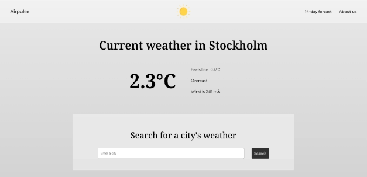
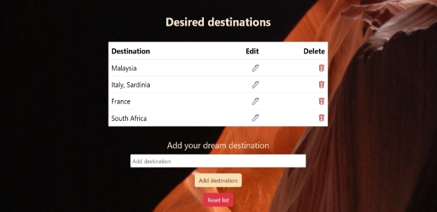
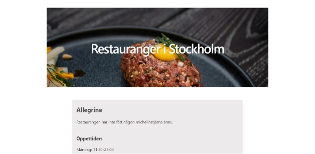
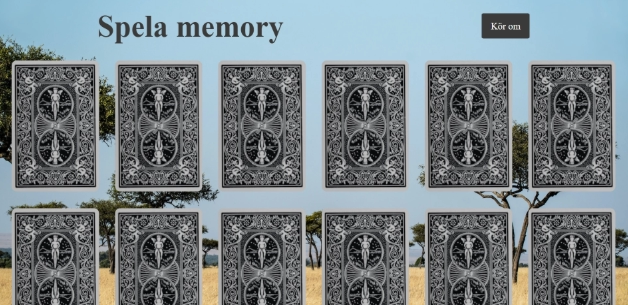
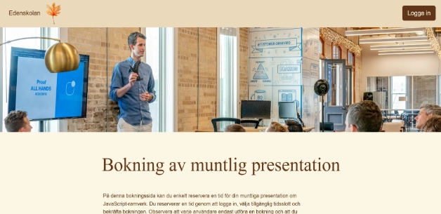

Tidigare projekt





Olika projekt som jag utvecklat
Ovan presenteras ett urval från de projekt som jag utvecklat under utbildningens gång. I dessa projekt har jag använt olika teknologier för att bygga funktionella och interaktiva webbsidor. Här har jag använt teknologier som React, Angular, Vue, JavaScript och PHP för att kunna skapa lösningar som både är skalbara och användarvänliga. Varje projekt har gett mig möjlighet att fördjupa mina kunskaper och tillämpa bästa praxis inom frontend- och backendutveckling.
<<<<<<< HEAD